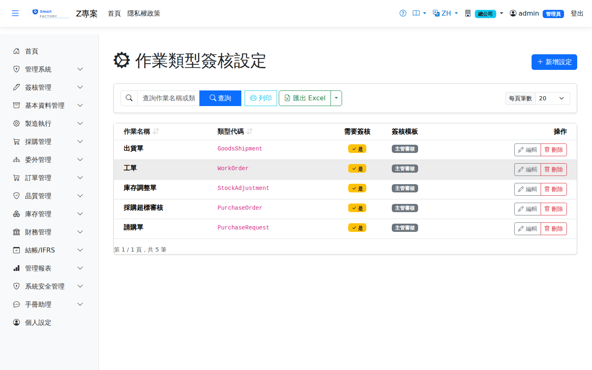

作業類型簽核設定Document Approval Settings
作業類型簽核設定是Document approval settings are 簽核的總開關the master switch for approval：它決定「哪一種單據需要簽核」，以及需要時走哪一份: they decide which kind of document needs approval and, when it does, which 簽核模板approval template。沒有在這裡設定的作業類型，其單據存檔後 it follows. A document type not set up here is 直接生效、不送審effective on save, with no approval。.

欄位說明Field reference
| 欄位名稱Field | 必填Required | 說明Guide |
|---|---|---|
| 作業名稱Document type name | 必填Required | 給人看的名稱，例：請購單。可隨時修改。The name people read, such as "Purchase Requisition". It can be changed at any time. |
| 類型代碼Type code | 必填Required | 程式辨識用的英文代碼，例：PurchaseOrder。The English code the program matches on, such as PurchaseOrder. 建立後不可修改It cannot be changed once created，且必須與系統實際使用的代碼完全一致（見下方清單）。, and it has to match exactly the code the system actually uses (see the list below). |
| 需要簽核Requires approval | 關閉時此類型單據不送審。關閉後系統會自動清空簽核模板欄位。With it off, documents of this type are not submitted for approval; the template field is cleared automatically when you turn it off. | |
| 簽核模板Approval template | 開啟需要簽核時，於此指定要走的路線。When approval is required, this is the route it follows. 開了需要簽核卻沒選模板，等同沒有生效Requiring approval without choosing a template has the same effect as not requiring it。. |
系統支援的類型代碼The type codes the system supports
下表是系統目前實際使用的代碼。The table below lists the codes the system actually uses. 請直接照抄，不要自行改寫大小寫或拼法Copy them exactly; do not change the spelling or capitalisation——系統是以完全相同的字串去查設定。, because the system looks the setting up by an exact string match.
| 類型代碼Type code | 對應的作業What it covers | 模組Module |
|---|---|---|
PurchaseRequest | 請購單Purchase requisition | PUR |
PurchaseOrder | 採購單Purchase order | PUR |
GoodsReceipt | 進貨單Goods receipt | PUR |
GoodsReturn | 進貨退出Purchase return | PUR |
VendorEvaluation | 供應商評鑑Vendor evaluation | PUR |
SalesOrder | 銷售訂單Sales order | ORD |
GoodsShipment | 出貨單Goods shipment | ORD |
SalesReturn | 銷退單Sales return | ORD |
InternalOrder | 內部訂單Internal order | ORD |
WorkOrder | 工單（投產）Work order (release) | MFG |
MrpRun | MRP 執行MRP run | MFG |
MaterialStagingOrder | 備料單Material staging order | INV |
StockAdjustment | 庫存調整單Stock adjustment | INV |
StockTransfer | 同廠調撥單Stock transfer (same plant) | INV |
CrossPlantTransfer | 跨廠調撥單Cross-plant transfer | INV |
ScrapDoc | 報廢單Scrap document | INV |
LoanDoc | 借入借出單Loan document | INV |
SampleDoc | 樣品／客供單Sample and customer-supplied document | INV |
ReworkMaterial | 重工發退料單Rework material issue and return | INV |
InventoryCountSheet | 盤點清冊Inventory count sheet | INV |
LandedCostAllocation | 進料費用分攤Landed cost allocation | INV |
OutsourceMaterial | 委外發退料單Outsource material issue and return | OSP |
OutsourceReceipt | 委外收貨Outsource receipt | OSP |
OutsourceRework | 委外重工單Outsource rework | OSP |
NonConformanceReport | 不合格品單（NCR）Non-conformance report (NCR) | QCR |
APPayment | 付款作業AP payment | FIN |
Company | 公司／廠商主檔Company / vendor master | BAS |
Product | 產品主檔Product master | BAS |
Tax | 稅別主檔Tax master | BAS |
CodeEntry | 代碼維護Code maintenance | SYS |
設定是分廠的Settings are per plant
每一筆設定都Every setting 只屬於建立當下您所在的廠belongs to the plant you were in when you created it，其他廠不受影響。因此：, and no other. This means:
| 情況Situation | 結果Result |
|---|---|
| 只在 A 廠建了採購單簽核設定You set up purchase-order approval in plant A only | A 廠的採購單要簽核，B 廠的採購單存檔直接生效。Purchase orders in plant A need approval; in plant B they take effect on save. |
| 多廠都要簽核Several plants need approval | 必須You have to 切換到每一個廠各建一次switch to each plant and create it there，沒有一次設定套用全公司的做法。; there is no way to set it once for the whole company. |
| 同一廠、同一類型建第二筆A second entry for the same type in the same plant | 會被擋下並提示該廠的此類型設定已存在。Is blocked, with a message that the setting already exists for this plant. |
操作步驟Steps
為某種單據開啟簽核Turning on approval for a document type
暫停某種單據的簽核Suspending approval for a document type
編輯該筆設定，把「需要簽核」關閉即可，不必刪除。之後新建的單據直接生效；Open the setting and turn "Requires approval" off; there is no need to delete it. Documents created afterwards take effect immediately, while 已經在跑的簽核單不受影響requests already running are unaffected，仍須簽完或撤回。 and still have to be signed or withdrawn.
刪除設定Deleting a setting
當該作業類型While the document type still has 尚有進行中的簽核流程approvals in progress時，系統會擋下刪除並指出是哪個作業類型卡著。請先讓那些單簽完或撤回。, the deletion is blocked and the message names the type. Let those requests be signed or withdrawn first.
匯出Export
查詢結果可匯出 Excel（.xlsx）、CSV 或 JSON，內容為作業名稱、類型代碼、是否需要簽核與所綁定的簽核模板。The results can be exported as Excel (.xlsx), CSV or JSON, containing the name, the type code, whether approval is required and which template is attached.